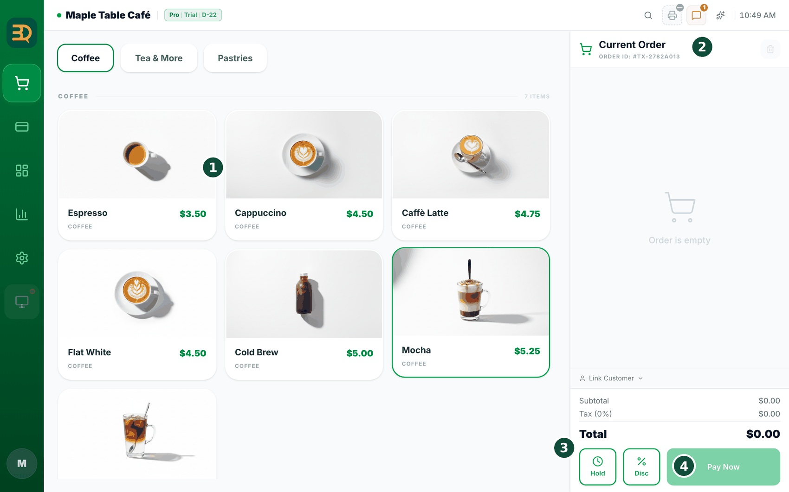
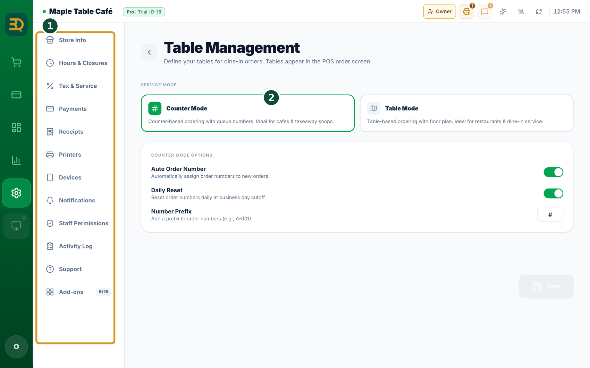
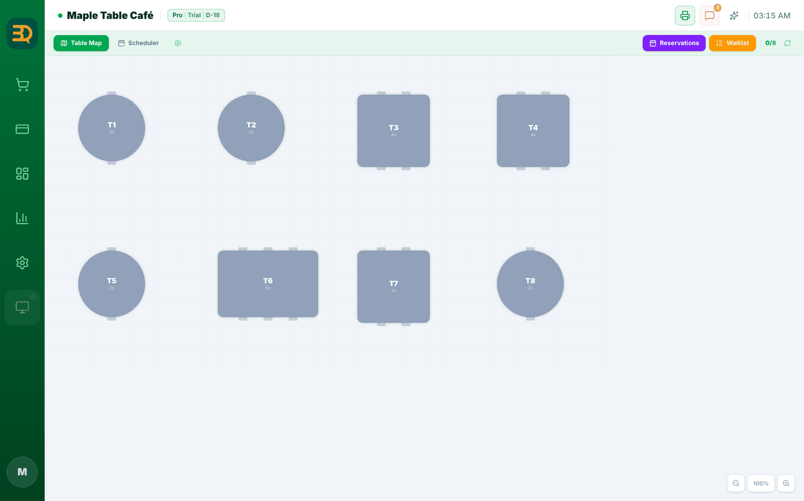
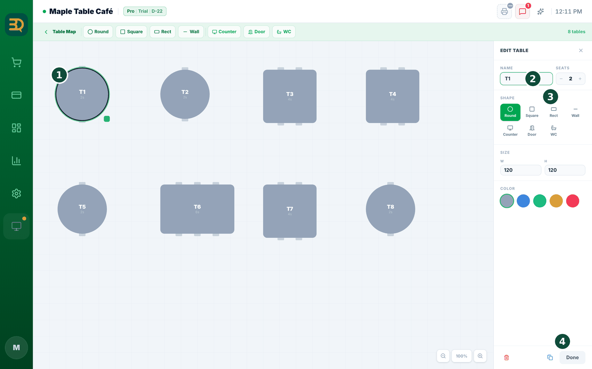
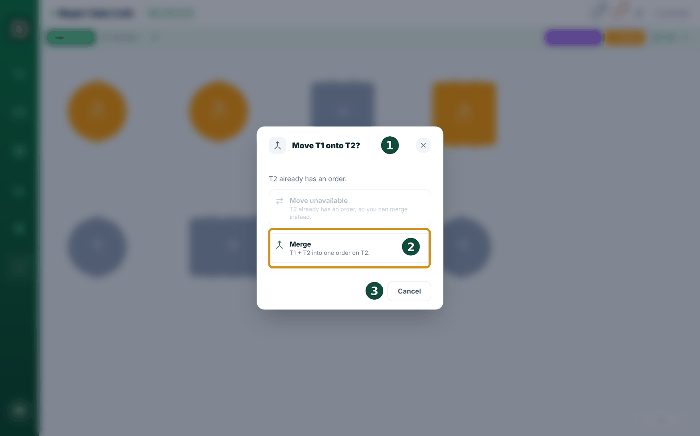

5Taking orders
This is the main job: taking an order. It works a little differently for counter shops and for table shops. Find your way below.
- If you serve at a counter: tap each item the customer wants. It goes into the order on the side of the screen.
- Tap the same item again to add more of it. The number goes up.
- When the order is done, tap Pay Now to take the money.
- If you serve at tables: open the table map (a picture of your floor). Tap the table where the customer is sitting. This starts their order.
- Add their items the same way — tap each one.
- Need a special note for the kitchen? Tap the item, then add an item note, like "extra hot" or "no ice".
- Need to stop and come back later? Tap "Hold". The order is saved. You can open it again any time (see "Hold an order" below).

Hold an order
Park an order for later. Sometimes you can't finish an order right away — a customer steps away, or a new person walks up. "Hold" lets you park the order and come back to it. Nothing is charged, and nothing is lost.
- Look at the bottom of the order panel. You'll see the "Hold" button, right next to "Disc" (discount).
- Tap "Hold". The order is parked without charging anyone. The screen clears so you can serve the next person.
- At a table, the held order stays attached to that table — so it's easy to find again.
- To get it back, open the held-orders list and tap the order to resume it.
- The order comes back just as you left it. Add more items if you like, then carry on to Pay Now.
Build your table map
If you serve at tables, the table map is a little picture of your room. You tap a table to start that table's order. You set it up once. Here's how to draw it.
Table service is on by default for Restaurant and Bar business types. Otherwise turn it on in Settings › Add-ons › Tables (flip the switch). The table map only shows when table service is on.
Before you begin: make sure table service is on (see the box above).
- Open the Table Map — tap Tables in the left sidebar. (It only appears when table service is on.)
- Tap the gear icon next to the Table Map tab at the top (Edit Layout) to enter the editor. If you have no tables yet, you can also tap the Open Editor button in the middle of the screen. This is where you build your room.
- In the toolbar at the top, tap the shape you want to add — Round, Square, Rect or Wall, plus Counter, Door and WC. A new table (or fixture) appears.
- Tap the table you added and an edit panel opens on the right. Set its Name (like "T1" or "Patio 3"), number of Seats, Shape, Size and Color, then tap Done. You'll see the table change as you pick.
- Drag the table to where it really sits in your room.
- Repeat for every table you have.
- When you're done, tap the Table Map (back) button at the top left to return to the map. Now you can tap a table to start a dine-in order.



Move & merge tables
Move and merge by drag & drop. Guests change their minds. Someone wants to move to the patio, or two tables decide to pay together. On the Table Map you can pick up a table's whole order and drop it somewhere else — nothing gets re-typed.
It's built right into the Table Map. It works any time Table service is on — there's nothing to switch on.
Move an order to an empty table
- Press and hold a busy table for a moment until it lifts up, then drag it onto an empty table and let go.
- A little box asks "Move T1 to T3?" — tap Move. The whole order jumps to the new table, and the old table becomes empty. The table's name doesn't change.
Merge two busy tables into one bill
- Press and hold a busy table, then drag it onto another busy table.
- The box title now reads "Move T1 onto T2?", the Move option is greyed out ("Move unavailable"), and a Merge card shows — "T1 + T2 into one order on T2." Tap it. Both orders become a single bill on the table you dropped onto, and the other table empties.

Move a whole party with one finger. Most tills make you void the order and ring it all again just to change tables. BrewDesk simply slides it over — and a 6-second Undo means a slip of the finger never costs you a sale.
Good to know: dropping onto a reserved table warns you first. A merged bill keeps the main table's discounts, and every table is still one clean order.